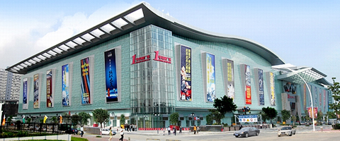

华南城1号交易广场，已于2009年初交付使用，总建筑面积约38万平米,是华南地区最大的商业单体建筑，2009年9月28日首批商家正式进驻营业。总展示位超过8500个, 共8层，地上6层地下2层。停车位2250个(含70余个大型货柜车位)，电梯143部，观光梯7部、客货梯18部，货梯16部，扶手电梯102部。楼层层高5.2-6.5米，采用“双首层”布局，主力铺位面积20-50平米，可自由组合间隔。现已进驻华盛奥特莱斯购物中心、时尚皮具鞋业创新体验馆、进口商品主题馆、新大芬创展中心、国际LED照明产业基地、电子商务产业园等。
（1）华盛奥特莱斯购物中心
华盛奥特莱斯购物中心首期规划面积约10万平米，是目前深圳市最大的品牌折扣购物中心，位于1号交易广场南区首一层至四层，南区首一层、一层及二层已开业。一层营业面积约2万平米，主要由运动服饰馆、休闲服饰馆、名品绅士馆、鞋类皮具馆、欧瑟名品馆、欧瑟时尚馆组成。首一层营业面积3万平米，主要由运动服饰馆、休闲服饰馆、童装馆、女装馆、内衣馆、家居馆、欧瑟生活馆组成，是珠三角区域规模最大、纯粹意义上的“奥特莱斯”旗舰购物城。
（2）、华南城时尚皮具鞋业创新体验馆
时尚皮具鞋业创新体验馆位于一号交易广场首一层、一层北区规划总面积6万平方米，结合O2O (ONLINE TO OFFLINE) 模式，即线下实体经营与线上互联网销售结合在一起，建立消费者信任的品牌经营模式。品牌商可通过网络发布消费信息及集结消费群体，并通过线下实体店让消费者体验产品，提供更直接的客户服务，加强消费者信心来提升品牌信誉度,通过双轨销售模式提升产品销售额，扩大品牌发展通路。
（3）华南城进口商品主题馆
华南城进口商品主题馆位于1号交易广场二层，首期营业面积1万平米，打造海峡两岸商品交易物流中心。引进台湾进口食品、家居生活用品、化妆品、保健品、文创产品，为台湾优质产品进入内地市场提供产品展示交易平台。
（4）华南城新大芬创展中心
华南城新大芬创展中心，位于一号交易广场三楼，面积50000平方米，一期25000平方米。以文化创意展示为主的总部型商业体，通过聚合众多实力派原创艺术与现代艺术机构，建成“总部—主力旗舰“新型文化经济模式。定位于高端艺术工艺品的创作、展示、推广、交易的高端平台，力求打造成为深圳的又一个知名的文化品牌，并且通过华南城这个重量级的载体向全国乃至全球文化市场辐射。
（5）光园·国际LED照明产业基地
光园•国际LED照明产业基地位于1号交易广场四层，首期规划面积4万平方米，是以LED光环境、光文化、光智慧、光艺术为主的LED产业旅游观光基地，也是集产品展示、交易、旅游为一体的LED科技文化购物广场。园内汇集了国内外新光源照明产品，包括原材料、灯具、零组件及各类应用产品， 是深圳华南城倾力打造的集灯饰灯具、LED照明、批发、零售等相关配套产业于一体的大型LED照明展贸交易中心。
（6）华南城电子商务产业园
华南城电子商务产业园一期位于1号交易广场五、六层，致力打造全国首个物流与电子商务协同发展的产业园，在深圳率先建立针对电子商务产业链配套的综合性服务基地，园区办公面积8万平方米，电商物流配送中心11万平方米。产业园依托华南城品牌优势，凭借“1+N”服务模式及“O2O”集群体系等创新运营模式，通过整合线下丰富的实体资源和物流配套资源，以十大公共服务中心为支撑，为各电子商务企业提供商务办公、产品展示、仓储物流、人才培训、技术交流、创业融资、生活配套等集成性服务。一期已完成了200多家企业入驻引进，现正启动二期招商运营。
位于产业园区五层的华南城网商创业园，倾力推出网商助跑计划，依托华南城网平台商品数据打造电商人才孵化、网商创业孵化平台，助力大学生、个体及社会小微网商、传统转型企业实现创业梦想。